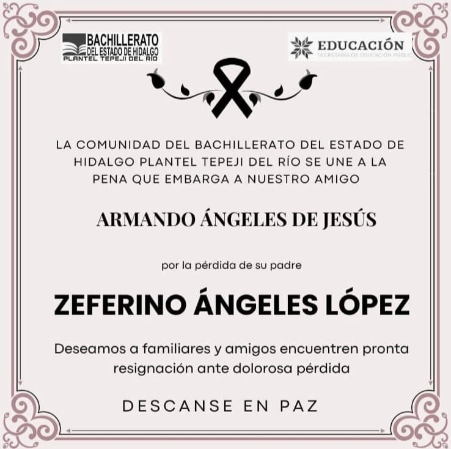
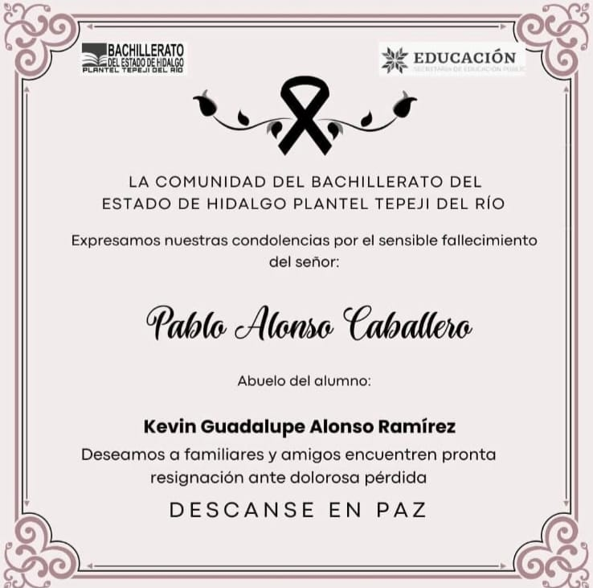

OBITUARIOS
Condolencias para ellos
El Bachillerato General Plantel Tepeji brinda sus mayores condolencias a todas las familias que desafortunadamente perdieron un ser querido
DESCANSE EN PAZ
Julia García Domínguez
Abuela del Ing. José Ramón Cornejo Ortiz
(Coordinador Operativo del Plantel)
DESCANSE EN PAZ
Aristeo Estrada Contreras
Abuelo de los alumnos Daniela Estrada Ramírez y Victor Hugo Estrada Ramírez

DESCANSE EN PAZ
Zeferino Ángeles López
Padre de Armando Ángeles López
DESCANSE EN PAZ
José Luis Vázquez Monroy
Tío del alumno Luis Mario Vázquez Miranda
DESCANSE EN PAZ
María Concepción Guerrero Cano
Abuela de la alumna Vanessa Zúñiga Castillo
DESCANSE EN PAZ
Adela Rodea Santillán
Abuela del alumno Kevin Guadalupe Alonso Ramírez
DESCANSE EN PAZ
Cirilio Pérez Cuevas
Abuelo de la alumna Estrella Pérez Santiago

DESCANSE EN PAZ
Pablo Alonso Caballero
Abuelo del alumno Kevin Guadalupe Alonso Ramírez
DESCANSE EN PAZ
Jorge Miranda Barreto
Abuelo de la Lic. Yaneth Lucero Miranda Miranda
(Directora del Plantel)
DESCANSE EN PAZ
María Guadalupe González Arellano
Abuela de la alumna Ximena Michell Rosales González
DESCANSE EN PAZ
Aurora García Soto
Madre de la Lic. Claudia Ocadiz García
(Directora de Academia)
DESCANSE EN PAZ
María Gil Anastacio
Abuela de Arizbeth Jiménez Gutiérrez
(Prefecta del Plantel)